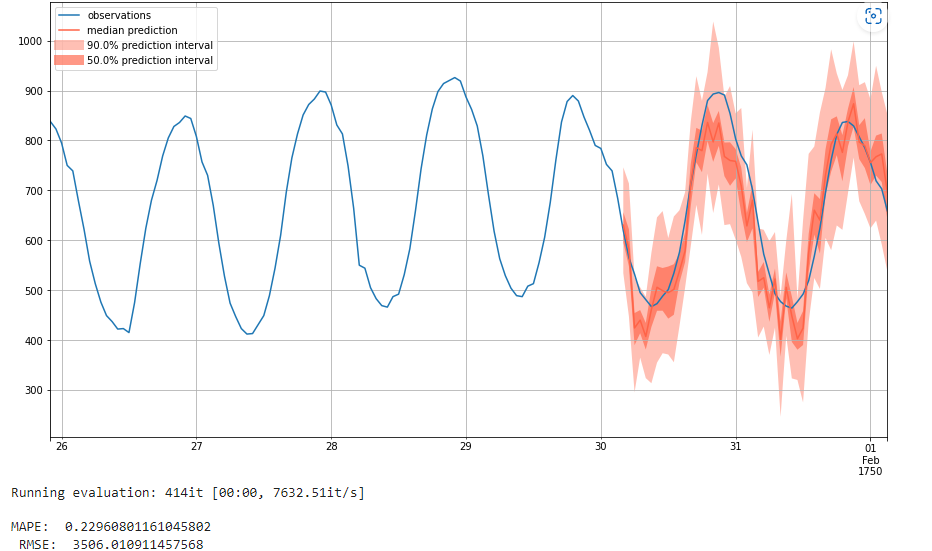
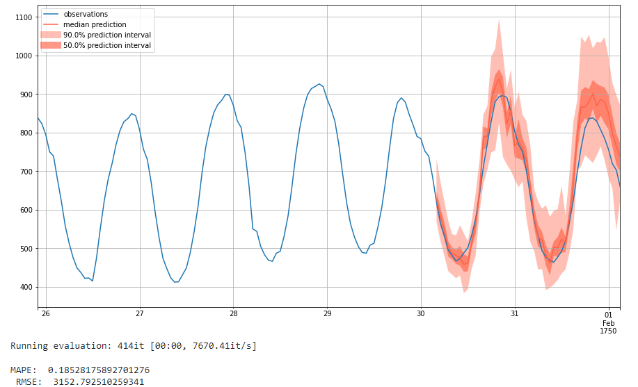
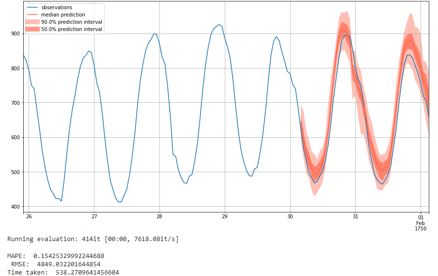
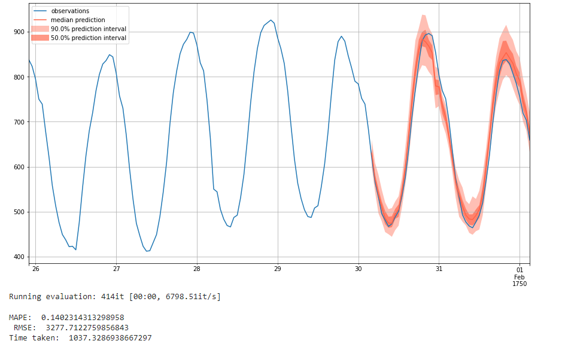

Time Series Forecasting with GluonTS: An Introductory Guide
Team Members
Levi Kaplan, Ming Luo
Project Source and Links
Colab containing our Guide and FindingsMain paper: GluonTS: Probabilistic and Neural Time Series Modeling in Python.
Figure

Introduction
Time series forecasting is a relevant problem in many domains, such as commerce, epidemiology, weather, and sports analytics. Any time there is historical data that has a time order from which a prediction can be made, time-series forecasting may help make these predictions. It is therefore important for this technique to be more approachable and easier to understand.
This tutorial aims at providing a brief introduction on how to apply deep learning models to do probabilistic time series forecasting. Specifically, this tutorial focuses on explaining the concepts behind GluonTS.
We want to help answer the following questions: what are the training and testing parameters? How is the model trained and run? How can one use GluonTS to solve a time-series forecasting problem? We set out to answer them through reading documentation and papers on the subject and exploring their practical use by coding examples and testing different models' performances through cross-grid hyperparameter tuning.
Methods
Our primary technique for this study involved reading through documentation and papers and conducting experiments through Google Colab. We read through a number of blog posts, articles, and code walkthroughs from the internet over the course of researching time-series forecasting. Additionally, we read through the GluonTS documentation and code, seeking to understand from a more fundamental way how the library works, how it's trained and tested, and how we can use it to run our own forecasting experiments.
Slides
The slides for our powerpoint as presented in class can be found here.
Results
We present here the results of our study on GluonTS and time series forecasting in Python. We have included a section on reproducibility that contains a link to our code for this project.
Background
- What is GluonTS?
GluonTS has its unique dataset format requirements [16]. Therefore, the first step of using GluonTS is to have a proper dataset. A proper dataset needs at least the following properties: an iterable collection of data entries (time series) and corresponding target field (column) and start field (column) for each data entry. The target field contains the values of the time series and the start field shows the starting date of the time series. There are three ways to generate proper datasets for GluonTS:
- What is probabilistic time-series forecasting?
Let us first discuss the concept of probabilistic forecasting. Probabilistic forecasting gives a probabilistic distribution of all the possible outcomes instead of one single value. For instance, we can predict the frequency of heads when flipping two coins once, which is a random experience. The result of throwing a coin will be either heads or tails. In addition, the frequency of heads in this experiment can be 0, 1, or 2. Instead of picking a single number from 0,1,or 2 as the prediction result (A.K.A. point forecasting), we are interested in generating a probability distribution table to include all the possible outcomes. The frequency of heads in the outcome is a random variable. The probability distribution table shows how likely each possible outcome is. The probability of outcome 0, which means that both the two coins show tails, is 0.5 * 0.5 = 0.25. The probability of outcome 1, which means that one coin shows tails and the other shows heads, is 2* 0.5 * 0.5 =0.5. The probability of outcome 2, which means that both the two coins show heads, is 0.5 * 0.5 = 0.25. Here is the distribution table:
Probabilistic forecasting is more meaningful than point forecasting since the real world is full of uncertainties. For example, when we do weather forecasting, the prediction is more accurate when we conclude that the probability that tomorrow will be a rainy day is 20% instead of just saying that tomorrow is going to rain or not. Similarly, probabilistic time series forecasting predicts the probabilistic distribution of the future time points.
For example, the above graph is an example of probabilistic time series forecasting. The generation process of this graph is like predicting a time series 1000 times and then plotting the distribution of all possible outcomes. From the graph, we can find the 50% percentile (median), 50% prediction interval, and 90% prediction interval. For example, if this was a graph aiming to predict the demand of milk, we could know that the demand is more likely between 700 to 800 gallons, but unlikely 900 gallons.
Data Preprocessing
- How is the Data Preprocessed?
GluonTS has its unique dataset format requirements [16]. Therefore, the first step of using GluonTS is to have a proper dataset. A proper dataset needs at least the following properties: an iterable collection of data entries (time series) and corresponding target field (column) and start field (column) for each data entry. The target field contains the values of the time series and the start field shows the starting date of the time series. There are three ways to generate proper datasets for GluonTS:
- Use an available dataset provided by GluonTS. There are several built-in datasets, which can be used on the modeling step without post processing.
- Create a self_defined dataset using GluonTS. This type of datasets can be created by using the ComplexSeasonalTimeSeries module, which should be a list of dictionaries. Each dictionary denotes a time series and it at least has the required target and start fields.
- Convert custom dataset to the GluonTS required format. Besides meeting the dataset format requirements mentioned above, we can also add more fields by using transformation objects, which could be helpful to our model. In addition, with the transformation object, we can set the appropriate training and inference windows to increase the forecasting accuracy.
- What dataset do we use?
The dataset we used in this tutorial, 'm4_hourly', is a built-in dataset. It is part of the dataset that is being used in the fourth edition of the Makridakis forecasting Competition. With the given 700 values from each hour between 1750-01-01 00:00 and 1750-01-30 03:00, our aim is to predict the values in the next 48 hours. This dataset is an object that contains three members:
- dataset.train is an iterable collection of data entries used for training. A time series is represented as a dictionary. Here is the training dataset infromation (the first column is start field and second column is target field):
- dataset.test is an iterable collection of data entries used for inference. It contains the training dataset and prediction values. Testing data is the extended training dataset. It consist of training dataset and an additional dataset in the end whose length equals to prediction_length. In our case, the training dataset length is 700. In addition, we are going to predict next 48 hours values, so the testing dataset's length is 748. Below is the graph of training and testing dataset:
- dataset.metadata contains statistical information of the dataset such as the frequency of the time series, prediction length. For m4_hourly dataset, dataset.metadata provides the recommended prediction length and time series frequency, which are 48 and hour.
Model Training
At the core of predicting time-series forecasts using GluonTS is the Predictor and the Estimator [16]. The goal of Predictor is to simply return a forecast given some time-series data. This predictor comes from the training of the Estimator. In essence, the Estimator is trained on the training data to produce a Predictor, which takes some time-series data and produces a forecast from that data.
Why are these two concepts split? These two constructs are separated to allow for the creation of a global model. Such a model is only trained once, and can then make many predictions for many different time series. The Estimator can be trained once to create a global model as a Predictor that can be fed many different time series, and use one consistent model to generate many different forecasts. This training is done "offline" in a separate step from the modeling, since creating the Predictor through training can take days or weeks for larger models.
Global models are contrasted by local models. These models are "online" in that they are fit and predicted in the same step. This makes their training and predictions much faster, but they trade off lower performance. These local models are defined as Predictors, since they don't need an Estimator from which the training is done.
Performance Measurement
We can now use an Estimator and Predictor to generate a probabilistic time-series prediction, but how do we know how well our model performed compared to the ground-truth data?
For this, we will use two different measurements of accuracy: MAPE and RMSE [9].
MAPE stands for "mean absolute percentage error", and is a percentage measurement of prediction accuracy for a forecasting model such as our time-series forecasting. The formula is as follows:
Here, A is the actual value, and P is the predicted value at that particular time.
This inner formula, (A - P) / A, is the percentage error. It represents the difference between the actual and estimated values in comparison to the actual value. The absolute value of this inner formula is summed up for every predicted point and is divided by the number of points. We take the absolute value here to avoid negative values (we do not care if the predicted value is worse or better than the actual value, only the degree to which it differs from the actual value).
RMSE (root mean square error) is the square root of the MSE (mean squared error). The MSE is a measurement of how forecasted values differ from actual values, and represents the average squared errors. Since errors can be positive or negative, we take the square to standardize it into only being positive values. We take the square root of the average to standardize the square taken earlier. The formula is as follows:

Again A represents the true values of the time series, and P represents the values predicted by the model. A value of 0 indicates a perfect fit to the data. The benefit of RMSE is that its metric is in terms of the unit being predicted, making it easier to understand the performance of models.
When comparing these two metrics, RMSE is more sensitive to outliers than MAPE. MAPE is easier to understand and compare because it outputs a percentage. However, MAPE can produce undefined or very large values if the actual values are close to 0, and unlike MAPE, RMSE is defined by the same metrics as the predicted values.
Model Evaluation
Now that we understand what a time-series is and why it is important, how can we go about making forecasts? An initial naive solution might be to figure out how the data follows seasonally, and predict the next season to be similar to the previous season.
- Estimator 1: Naive Seasonal
For this, we use the GluonTS package SeasonalNaivePredictor [17]. This model takes in three values: freq, the frequency of the input data; prediction_length, the number of time points to predict; and season_length, which is how long the "seasons" of the data are, or when the pattern repeats. For the first two inputs, the dataset metadata provides it for us: we can use dataset.metadata.freq to get the frequency, and dataset.metadata.prediction_length to get the prediction length. For the third parameter, season_length, we can also use the prediction length, as we're trying to use the previous "season", or previous day, as our prediction for the next day.

Here, you can see that the model predicts the next season to be exactly the same as the previous season. It generally does a pretty decent job, with a MAPE value of 0.18 and an RMSE of 1985. We see such good performance largely due to the consistency of our data. The next 48 hour interval is generally quite aligned with the previous 48 hours.
To demonstrate that this model is not particularly accurate when using time series that are less consistent, we run the same naive seasonal model on a new dataset, the 'covid_deaths' dataset. Here we see that it using the same naive seasonal technique of just predicting the values it saw before is much less accurate. We can view the 'm4_hourly' results almost like a best case, since the 'm4_hourly' dataset is so consistent from one 48 hour period to the next.
Here we don't see prediction intervals like we do with the following two models we analyze because it isn't giving a probabilistic forecast. Instead, it's predicting precisely the same values it saw before. This means it is much less robust. Since it just repeats the previous season, there's no concept of trends over the course of many seasons or predictive power for more anomalous data. There's also a lack of intelligence here; it's just predicting the same values it previously saw instead of doing any sort of true prediction. For more intelligent models, we next turn to Deep Learning and leave this naive forecast as our baseline for future analysis.
- Estimator 2: Simple Feed-Forward Network
For our first attempt at a deeper model that uses machine learning for intelligent prediction, we use GluonTS's SimpleFeedForwardEstimator module [18]. This is a global model, which means that it's created as an Estimator and then a Predictor is generated once the Estimator is trained on the training data.
The Simple Feed Forward Estimator (SFFE) uses a Multi-Layer Perceptron (MLP) architecture. This model takes in a number of parameters. It comprises quite a few parameters, we focus on a few in particular:
- prediction_length (int): Length of the prediction horizon
- trainer: Trainer object to be used (default: Trainer())
- num_hidden_dimensions: Number of hidden nodes in each layer (default: [40, 40])
- batch_normalization: Whether to use batch normalization (default: False)
The model takes in a Trainer, from which we can adjust the epochs, learning rate, and batches per epoch. We use a standard number of epochs at 10 and batches per epoch at 50 to reduce training time. In total, we analyze the adjustment of 3 hyperparameters: num_hidden_dimensions, batch_normalization, and learning_rate. We detail our findings below.
To determine which hyperparameters are best for this model, we take a list of values for each hyperparameter and train the model with each value from each list of hyperparemeters.
- Hidden dimensions: [[40], [40, 40], [40, 40, 40], [100], [100, 100], [100, 100, 100]]
- Batch normalization: [False, True]
- Learning rate: [1e-4, 1e-3, 1e-2, 1e-1]
We run the model with each of these different values, for a total of 48 times. That way, we can determine which value of the hyperparameters results in the best performance of the SFFE model.
How did we choose these values? The default for num_hidden_dimensions is [40, 40], meaning two connected layers of 40 nodes each. We are curious to what extent reducing or increasing the number of layers with 40 nodes affects performance. Additionally, we are curious whether increasing the number of nodes per layer from 40 to 100 will increase performance. For batch normalization, there are only two possible values: False (the default) and True, so we used both. For Learning rate, the default is 1e-3, so we are interested in whether decreasing or increasing the learning rate will improve performance. Below are the results:
We next analyze these results to uncover what combination of hyperparameters deliver the best performance in our model.
The parameters with the lowest MAPE score of 0.20 are hidden layers of [100], learning rate of 1e-2, and batch normalization. Its RMSE is 2875. The parameters with the lowest RMSE score of 1849 are hidden layers of [100, 100], learning rate of 1e-2, and no batch normalization. Its MAPE score is 0.22.
We see that having more layers and no batch normalization, or fewer layers with batch normalization, gives optimal performance. A learning rate of 1e-2 seems to be optimal. We see different hyperparameters for the lowest MAPE and lowest RMSE, which highlights how these different metrics measure different things.
We next use these optimal parameters to train a model with more epochs. The goal of this is to test our hyperparameters on a longer training timeframe. We didn't increase the epochs when testing hyperparameters because the training time for the 48 different models would have been prohibitive. We can now use the optimal values gathered from testing over a shorter trianing time to see how it improves when given a longer training time.
We are going to use the values with the lowest MAPE values because the RMSE was fairly close to that of the lowest RMSE, whereas the hyperparameters with the lowest RMSE values had a fairly bad MAPE score.
Below is the prediction result with 10 epochs:

Below is the prediction result with 100 epochs:

We see here that both the MAPE score and the RMSE score decrease when the epoch chnages from 10 to 100. when comparing the output from 10 and 100 epochs, we see that the 90% prediction interval is much less varied when trained over 100 epochs, and in general more epochs cause the intervals to smooth out. At the same time, the 50% prediction interval seems to be less diverged from the ground-truth value.
To investigate this further, we run a similar experiment: we use the hyperparameters with the lowest RMSE score for 100 epochs. We see that the MAPE value decreases from its original, while the RMSE increases. We again see that more training epochs appears to improve MAPE while making the RMSE worse. Below is the prediction plot:
Below is the prediction result with 10 epochs:
Below is the prediction result with 100 epochs:
Look at the above plot, we see the same trend as before, where the 90% prediction invervals are smaller and less varied while the 50% confidence intervals are closer to the ground truth in the 100 epoch run.
The last model we will train is the DeepAR Estimator [5]. This Estimator comes from a paper by Salinas et. al.[3], and uses an auto-regressive neural network to train on a number of similar time series. As opposed to the relatively shallow SFFE we used previously, this is a more state-of-the-art, deep network using some of the more complex techniques we discussed during the later portion of the class.
This model creates a global model through learning from related time series. In essence, through utilizing a large number of related time series, DeepAR is able to augment the data for a small number of time series in the actual training data. DeepAR is a "forecasting method based on autoregressive regurrent networks" utilizing historical data of all time series in the data set, not just the training time series [3].This moel creates a global model through learning from related time series. In essence, through utilizing a large number of related time series, DeepAR is able to augment the data for a small number of time series in the actual training data. DeepAR is a "forecasting method based on autoregressive regurrent networks" utilizing historical data of all time series in the data set, not just the training time series [3].
DeepAR utilizes an RNN architecture, which when trained on the larger datasets gives higher accuracy. In addition, as the model learns more dependencies across time series, the model doesn't need external feature engineering or hyperparameter tuning, and can provide forcasts with little to no history. This means that we can just create the estimator and predictor based on the dataset's metadata and run the model as-is. The only hyperparameter we alter is the number of epochs.
We first create the model and run it with a low amount of epochs at 10. We see here that it doesn't perform particularly well, performing worse than our SFFE network with an MAPE of 0.16 and an RMSE of 5358. This does worse than the optimal hyperparameter network from the SFFE model and seems to counteract the state-of-the-art performance that DeepAR claims it can achieve.
We now run the same model with a higher number of epochs, at 50. We see a vastly improved performance, with an MAPE of 0.14 and an RMSE of 4153, indicating that giving DeepAR a higher number of training iterations will greatly improve performance. This is more what we would expect from an autoregressive network, as it trains on much more data recurrently and can see higher performance with more training epochs as a result.

We finally run the model with 100 epochs, which is the default of the model. This indicates that this is the expected training expenditure for our model, and will give a very good performance.

We get an MAPE of 0.134 and an RMSE of 1566, which is very good performance and the best we've seen. We can therefore conclude that given enough training epochs, the DeepAR model performs the best.
Findings and Conclusion
Above is an informational guide to probabilistic time series forecasting in general, and how GluonTS can be used to solve time series problems.
We first discussed the problem of time series forecasting, getting a probabilistic distribution of possible future values gathered from investigating past values. We then went over how GluonTS helps model these types of problems, from how they take in time series data to how they use Estimators and Predictors to create global models that can forecast future probability distributions from a time series. We also discussed methods of measuring the performance of a time series model, and detailed how MAPE and RMSE work and why we use those two metrics together to measure our models' performance.
We then experimented with using three different models. We first used the naive seasonal model, which used the exact values of the previous season when predicting the next season, outputting a single value instead of a probability distribution. We used this model as a baseline, and explained why it isn't a particularly intelligent approach.
We next used GluonTS' Simple Feed Forward Network, an MLP network for which the number and size of layers, batch normalization, and learning rate can be adjusted. We used grid-search to tune these three hyperparameters and discovered that a single layer of 40 neurons with batch normalization and a learning rate of 0.01 optimized MAPE, while three layers of 40 neurons each without batch normalization and the same learning rate of 0.01 optimized RMSE. Since the RMSE values were still fairly low with the model that optimized MAPE, while the MAPE value was rather high with the model that optimized RMSE, we decided to use the model optimizing MAPE for further analysis. To test how this model performs when given more training epochs, we ran it for 100 epochs and got an optimal performance of MAPE: 0.1716 and RMSE: 3006.
For our final model, we trained the DeepAR network first with 10 epochs and then with 50 and 100. We found that while the network performed worse than the Simple Feed Forward network and the naive network when run with 10 epochs due to the high RMSE, when run with 50 and 100 epochs it performs much better. At 100 epochs trained, it achieved an MAPE score of 0.134 and an RMSE of 1566. However, it takes much longer to train, with the 100 epoch model taking over 16 minutes to train. This indicates a tradeoff for the DeepAR model: it does worse than SFFE when given less time to train, but when given more time will perform significantly better than the SFFE model.
We hope that through reading this notebook, you are able to gain a newfound understanding of what a time series forecast is, its importance, and how different models in GluonTS can be used for modeling this problem.
Reproducibility
We have compiled our results into a Google Colab. The link to this can be found here.
References
[1] Anderer, Matthias, and Feng Li. "Hierarchical forecasting with a top-down alignment of independent-level forecasts." International Journal of Forecasting (2022). Link.
[2] Alexandrov, Alexander, et al. "GluonTS: Probabilistic and Neural Time Series Modeling in Python." J. Mach. Learn. Res. 21.116 (2020): 1-6. Link.
[3] Salinas, David, et al. "DeepAR: Probabilistic forecasting with autoregressive recurrent networks." International Journal of Forecasting 36.3 (2020): 1181-1191. Link.
[4] Theil, McClain. An Intuitive Introduction to Deep Autoregressive Networks. Berkeley. Link.
[5] GluonTS DeepAR Documentation. Link.
6] Brownlee, Jason. 11 Classical Time Series Forecasting Methods in Python (Cheat Sheet). Machine Learning Mastery. 6 August 2018. Link.
[7] GluonTS Documentation. Link.
[8] GluonTS Quickstart Tutorial. Link.
[9] Allwright, Steven. RMSE vs MAPE, which is the best regression metric? Link.
[10] Pathak, Puja P. Time Series Forecasting — A Complete Guide. Medium. 8 September 2021. Link.
[11] Batch Normalization. Wikipedia. Link.
[12] Maithani, Mohit. Guide To GluonTS and PytorchTS For Time-Series Forecasting (With Python Implementation). Analytics India Mag. Link.
[13] GluonTS Extended Forecasting Tutorial. Link.
[14] Gasthaus, Jan et. al. Creating neural time series models with Gluon Time Series. AWS. Link.
[15] Hannachi, Skander. 3 facts about time series forecasting that surprise experienced machine learning practitioners. Towards Data Science. 12 September 2018. Link.
[16] GluonTS Concepts. Link.
[17] GluonTS Seasonal Naive Predictor Documentation. Link.
[18] GluonTS Simple Feed Foward Estimator Documentation. Link.